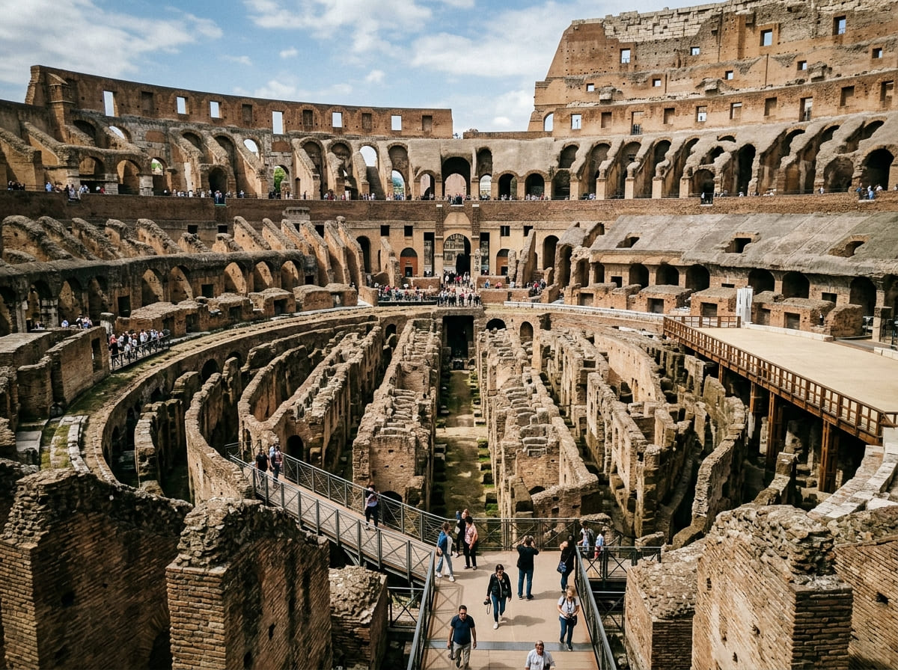

Timetable
Seasonal

Colosseum Opening Hours 2026: Full Schedule, Last Entry & Closures
Full month-by-month timetable for the Colosseum, Roman Forum, and Palatine Hill. Verified last-entry cutoffs, holiday closures on Jan 1 & Dec 25, and seasonal twilight extensions.